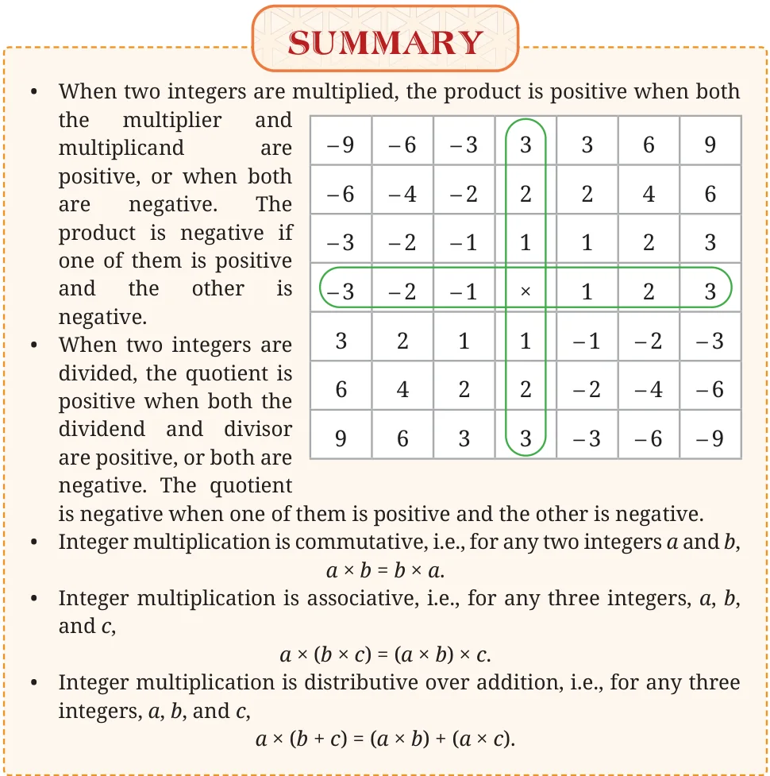

Terhüchü
Terhüchü is a game played in Assam and Nagaland. The board has 16 squares and diagonals are marked as shown in the following figure. This is usually roughly scratched on a large piece of stone or just drawn on mud. There are 2 players, and each player has a set of 9 coins placed as shown. The coins in one set look different from those in the other set.
Objective
The goal is to capture all the opponent’s coins. The first player to do so is the winner. A player may also win by blocking any legal move by their opponent. If a draw seems unavoidable, the player with more coins wins.
Gameplay
- •The starting position of the game is as shown above.
- •Players take turns. In each turn, they can move a single coin along
a line, in any direction, to a neighbouring vacant intersection. Or, if an opponent’s coin is at a neighbouring intersection, and there is a vacant intersection just beyond it, they can jump over the opponent’s coin and land in the vacant intersection.
- •If a player jumps over an opponent’s coin, it is considered captured
and is removed from the board. Multiple captures in one move are allowed, and the direction can change after each jump.
- •Inside the triangular corners, which are outside the main
square, a coin may skip an intersection and move straight to the next one. That is, it can jump over an empty intersection and go to the one beyond it.